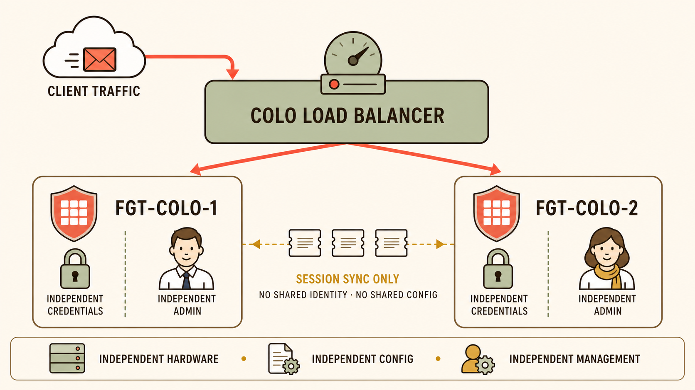
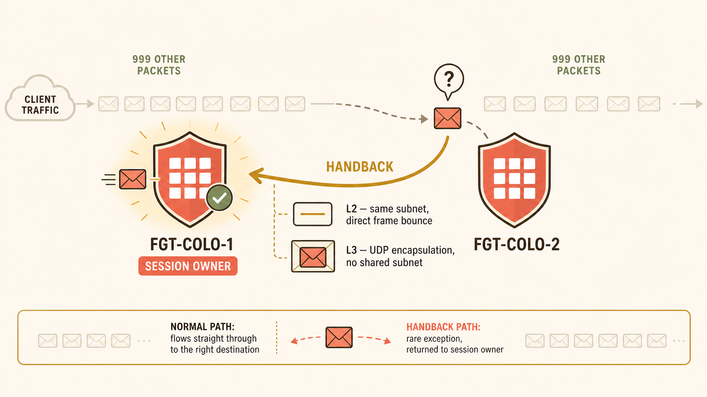
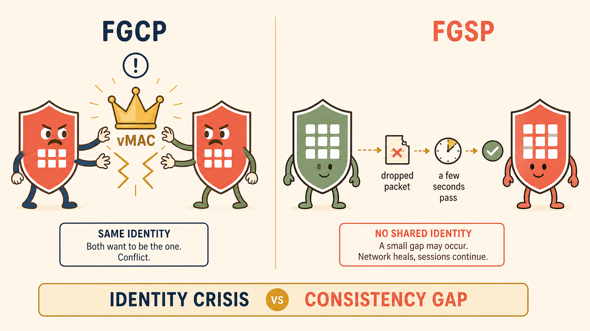

Vaultline's colo team hands you three non-negotiable conditions before you're even allowed to propose a design: their own external load balancer stays, they manage their firewall independently, and the LB's routing can send a reply through a different firewall than the one that received it. Your instinct is to reach for the HA technology you already know cold.
- If the colo's LB routing were perfectly symmetric — no exceptions — would FGCP satisfy the "independently managed, separate change windows" requirement on its own?
- Independent of traffic at all, what does forming an FGCP cluster commit two physical boxes to, organizationally as well as technically?
Why FGCP Can't Live In This Topology

The colo topology: one external LB owning every routing decision, two fully independent FortiGates, connected only by a thin session-sync channel.
The colo team's three conditions look like separate objections at first, but they attack FGCP from exactly two angles. Condition #2 — independent management, separate credentials, separate change windows — is a direct hit on FGCP's config synchronization: an FGCP cluster keeps its members' configuration near-identical (aside from HA identity and interface IPs) specifically so both boxes behave as one logical unit. There's no room in that design for "the colo team's own change window," because a change on one member doesn't stay local — it's synced.
Condition #3 — the LB's asymmetric return-path routing — is a direct hit on FGCP's session-ownership model. In FGCP, the primary decides which member handles a given session; that decision is made internally, by the cluster itself. An external load balancer that routes a packet to whichever member it feels like has no channel into that decision-making process — it isn't consulting the cluster, it's routing around it. The result, worked through in Session 17's terms, is a session that no member ever properly "owns" from FGCP's point of view.
Strip away everything FGCP requires — identity, config, ownership — and ask what's left that two totally independent boxes could still share to let a mid-flight session survive a box dying. The answer, reasoned from first principles rather than memorized, is the session table itself: FortiGate Session Life Support Protocol. Two boxes, zero coupling on anything else, one shared thing — live session state.
FGT-Colo-1 builds a session. The LB's return-path routing sends a later packet to FGT-Colo-2 instead. FGT-Colo-2 has a synced copy of the session entry — but is that entry enough for it to just finish the job itself, or does something still have to happen between the two boxes?
- If FGT-Colo-1 and FGT-Colo-2 are independently managed — possibly different NAT pools, different interface addressing — why can't FGT-Colo-2 simply reply using its own interfaces?
- Out of 1000 packets in a session, only 1 happens to land on the wrong box. In FGCP Active-Active, how many of those 1000 packets required a relay through the primary? What does that contrast tell you about FGSP's actual per-packet cost?
The FGSP Superpower

A stray packet lands on the wrong peer, then gets handed back to the session owner — by direct frame bounce (L2) or UDP encapsulation (L3) — a one-off correction, not a standing relay.
FGSP defines a session owner: the FortiGate that received the session's first packet. When a later packet for that same session lands on the wrong peer — because of how the colo's LB routes return traffic — that peer doesn't improvise. It hands the packet back to the owner using one of two mechanisms, and which one applies depends entirely on whether the two peers share a broadcast domain.
- Layer 2 handback (
layer2-connection available): requires both peers' internal and outgoing interfaces to sit in the same subnet with direct L2 adjacency. The misrouted packet is bounced straight to the owner's MAC address on the shared segment — cheap, fast, no new headers needed. - Layer 3 handback (
layer2-connection unavailable— the default, e.g. cloud environments with no L2 adjacency): the packet is wrapped in a new outer IP header and delivered via UDP encapsulation between the peers' interfaces. Normal routing has nothing in the original packet's addressing to point it at the owner, so the outer header does that job instead; the owner strips it and processes the original packet as if it arrived directly.
The number that actually matters here is how often this happens. In FGCP Active-Active, the 0x8891 relay from Session 17 is structural — every single inbound packet of a distributed session crosses the link, for the session's entire life, whether or not routing is ever actually asymmetric. FGSP is the opposite: out of 1000 correctly-routed packets, zero pay any cross-box cost. Only the one packet that genuinely lands on the wrong peer triggers a handback. Permanent structural relay vs. on-demand exception handling is the cleanest line separating these two technologies.
TCP and IPsec sync automatically between FGSP peers. UDP, ICMP, expectation sessions, and NAT sessions don't — you opt in. And even though an IPsec SA is synced, a live misrouted encrypted packet still doesn't get processed independently by whichever peer catches it.
- What's genuinely more expensive to lose and rebuild from scratch — a TCP session or a UDP "session" — and why would that difference decide what syncs by default?
- If FGT-Colo-2 has a synced copy of an IPsec SA, why doesn't it just decrypt a misrouted packet locally instead of handing it back to the owner?
Sync Interfaces, Session Types & Encryption

FGCP split-brain (two boxes contesting one identity) versus FGSP sync lag (a brief, self-healing consistency gap) — same word, "lag," entirely different blast radius.
By default, FGSP peers synchronize sessions over Layer 3, between the interfaces configured with each peer's IP address (config system standalone-cluster / cluster-peer / peerip). You can pin a dedicated session-sync-dev interface for Layer 2 sync when the peers are directly connected — it automatically falls back to Layer 3 if that link fails. Session sync alone needs no L2 connectivity at all; the separate, optional standalone config sync feature does require L2, since it elects a primary for config-push purposes only (never for traffic).
Sync-by-default is TCP (IPv4/IPv6) and IPsec tunnels. Everything else is opt-in: UDP/ICMP via session-pickup-connectionless, expectation sessions like SIP/FTP pinholes via session-pickup-expectation, and NAT'd sessions via session-pickup-nat. The reasoning mirrors Session 17's proxy-vs-flow-based distinction: sync the type that's genuinely expensive to lose and rebuild (a negotiated TCP stream), skip syncing the type that's cheap bookkeeping by default (a UDP entry), and let the administrator opt in when a specific workload demands it.
For links crossing infrastructure neither team fully controls — a shared colo backbone, say — session sync can be encrypted: config system standalone-cluster / set encryption enable / set psksecret <key> automatically provisions an IPsec VPN and the policies to match. This only applies to Layer 3 sync connections, which makes it the canonical answer for protecting sync traffic between datacenters.
| Feature | FGCP | FGSP | VRRP |
|---|---|---|---|
| Redundancy capacity | 2–4 FortiGate devices | 2–16 standalone devices or 2–16 FGCP clusters | Unlimited, any VRRP-compliant device |
| Load balancing | Native A-A HA load balancing | Through external load balancers | Not available |
| Session synchronization | Native | Available through configuration | Not available |
| Configuration sync | Native | Available if required (standalone config sync) | Not available |
Finally, the split-brain contrast: FGCP's heartbeat has one job that VRRP-style identity election shares — decide who owns the shared vMAC. If the heartbeat drops, both members can independently conclude the other is dead and both promote themselves — a genuine identity crisis that doesn't resolve itself when the link returns; it can require active intervention. FGSP has nothing to contest: no vMAC, no shared IP, no primary/secondary role for traffic. A lagging sync channel produces, at worst, a stray packet with no matching entry — dropped as an orphan, retransmitted by TCP, resolved automatically the moment sync catches up.